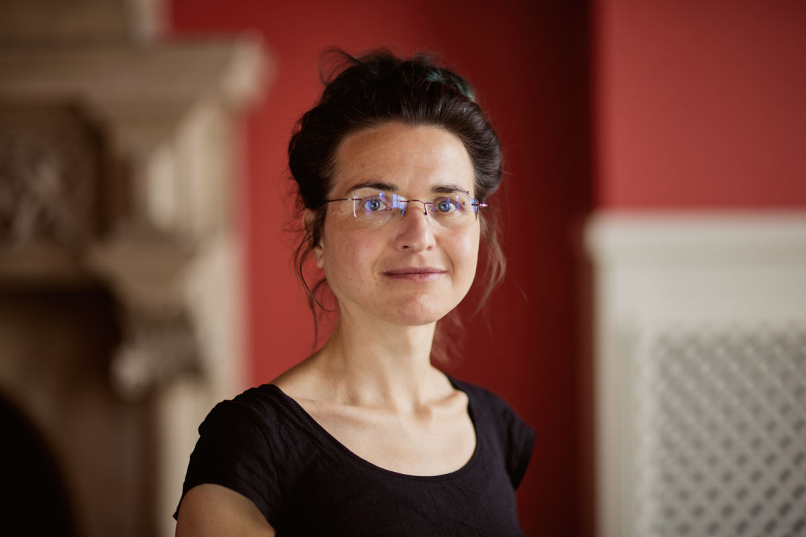

Kerstin Hötte
Economist · Economic networks · Technological change · Climate & digital transformation
I am an economist researching how technological change and economic disruptions reshapes economies and societies, especially for climate action and the digital transition. Much of my research builds on empirical production and innovation network data and investigates how change can be traced in adaptive economic networks.
Since 2024, I am a permanent Assistant Professor of Ecological Economics at Kedge Business School (Paris). If you want to know more, please check out my CV or get in touch.
This site is intentionally minimal. Find my full publication record on the publications page or via Google Scholar / ORCID.